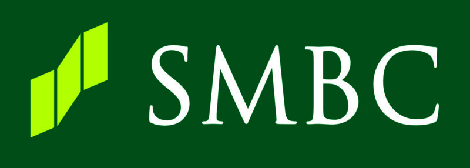

<!DOCTYPE html>
<html lang = "en">

  <head>
    <meta charset = "utf-8">
    <title>Berk Tanyeri</title>
    <link rel="icon" href="images/name-logo.png"/>
    <link href = "styles/site.css" type = "text/css" rel = "stylesheet">
    <!-- Source: (original logo) Berk Tanyeri, via Photoshop -->
  </head>

  <body>

    <header>
      <div class = "navi">
        <!-- Source: (original logo) Berk Tanyeri, via Photoshop -->
        
        <!-- Source: (original logo) Berk Tanyeri, via Photoshop -->
        <button id="menubutton"></button>
        <div id="dropper" class = "dropdown hidden"> <!-- hidden menu for hamburger -->
          <nav>
            <ul class = "navi">
              <li class="navi"><a href="index.html">Home</a></li>
              <li class="navi"><a href="education.html">Education</a></li>
              <li class="navi"><a href="experience.html">Experience</a></li>
              <li class="navi"><a href="personalprojects.html">Personal Projects</a></li>
            </ul>
          </nav>
        </div>
      </div>
    </header>

    <section>
      <h3><strong>Goldman Sachs, Summer 2022 - Ongoing</strong></h3>
      <h4>Software Engineering Strat in the Asset and Wealth Management Division</h4>
      <div class = "bulletandphoto">
        <ul>
          <li>Developed back-end functionalities to support trading algorithms and processes via a combination of functional and objectoriented programming (Scala + Java)</li>
          <li>Assisted in the design and implementation of the front-end user interface and experience for the company’s trade planning platform (TypeScript + Angular)</li>
          <li>Gained experience in working with document-oriented databases (MongoDB)</li>
        </ul>
        <figure>
        <!-- Source: https://en.wikipedia.org/wiki/Goldman_Sachs  -->
          
          <figcaption>
            Source: <cite><a href="https://en.wikipedia.org/wiki/Goldman_Sachs#/media/File:Goldman_Sachs.svg">Wikipedia</a></cite>
          </figcaption>
        </figure>
      </div>
    </section>

    <section>
      <h3><strong>Sumitomo Mitsui Banking Corporation, Summer 2021</strong></h3>
      <h4>Security Architect Intern at America’s Headquarters</h4>
      <div class = "bulletandphoto">
        <ul>
          <li>Analyzed and documented the firm’s current cloud security practices as well as completing gap analyses for adopting security
          technologies for global implementation</li>
          <li>Assisted in the implementation of Data Loss Prevention (DLP) policies via Microsoft’s Cloud Access Security Broker (CASB)</li>
          <li>Assisted in the design of the authentication framework via Azure AD, SSO, MFA and SAML while also planning for global
          deployment to group companies</li>
          <li>Contributed to the firms’ design and adoption of desktop deployment and policies to facilitate remote working</li>
        </ul>
        <figure>
        <!-- Source: https://www.appps.jp/356422/  -->
          
          <figcaption>
            Source: <cite><a href="https://www.appps.jp/356422/">Appps</a></cite>
          </figcaption>
        </figure>
      </div>
    </section>

    <section>
      <h3><strong>Cook House Active Citizen, Fall 2019 - Spring 2022</strong></h3>
      <h4>Volunteer</h4>
      <div class = "bulletandphoto">
        <ul>
          <li>Lead and recruited students for intellectual and social programming that match the educational, intellectual, and social missions of
          Cornell University</li>
          <li>Arranged and coordinated guest speakers and alumni to allow current students to network and create dialogue</li>
        </ul>
        <figure>
        <!-- Source: https://alicecookhouse.cornell.edu/sites/alicecookhouse/files/2019-08/Alice-Cook-House-logo.png  -->
          
          <figcaption>
            Source: <cite><a href="https://alicecookhouse.cornell.edu/sites/alicecookhouse/files/2019-08/Alice-Cook-House-logo.png">Cornell University</a></cite>
          </figcaption>
        </figure>
      </div>
    </section>

    <hr />

    <footer>
        <br/>Website created by Berk Tanyeri
    </footer>

    <script src = "scripts/jquery-3.6.0.js"></script>
    <script src = "scripts/myscripts.js"></script>

  </body>

</html>
